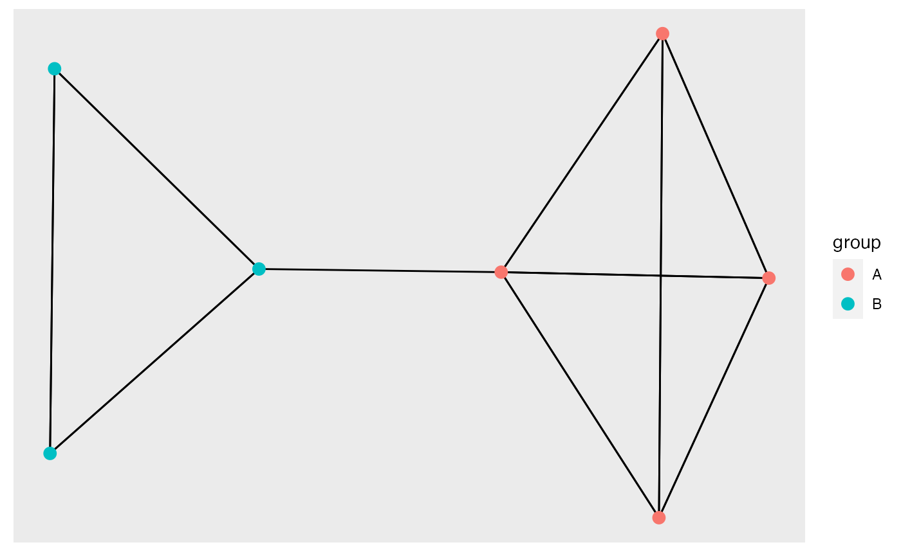
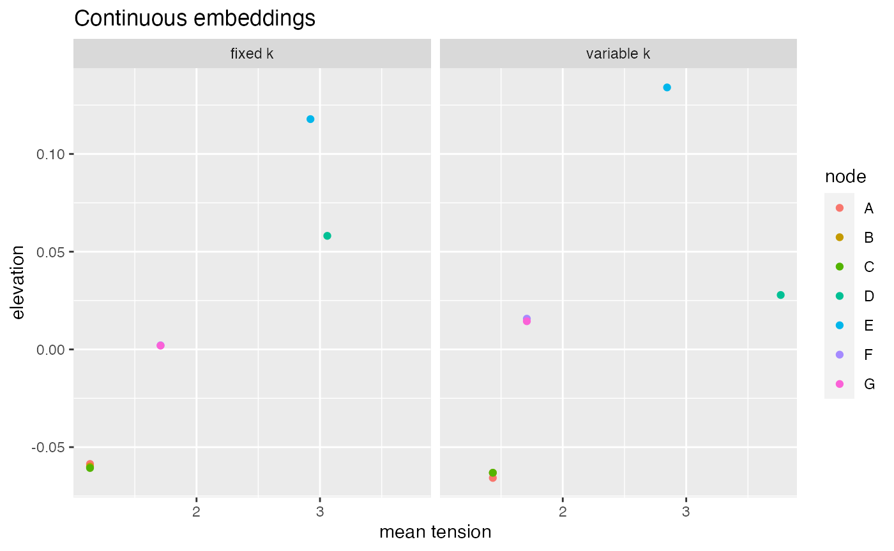
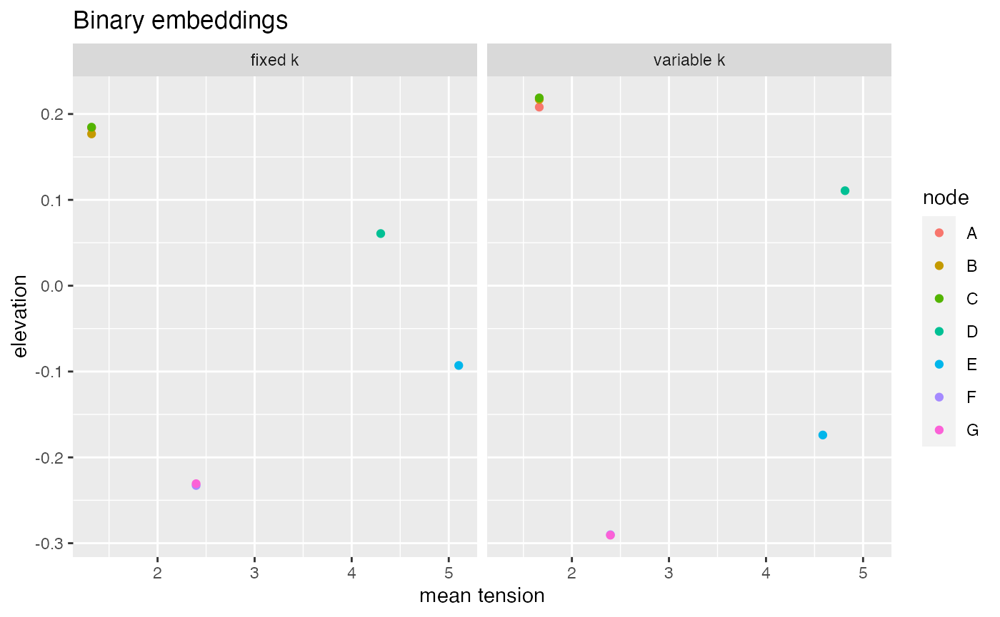
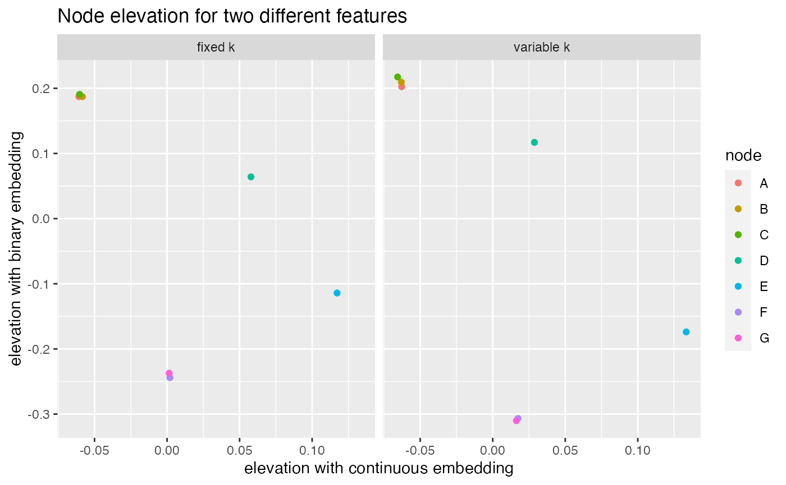

vignettes/Binary-and-continuous-features.Rmd
Binary-and-continuous-features.Rmd#Plot the data
The biconnected_network is a simple network constructed of two groups of nodes that are linked by a single edge. This means the network is made of 3 bi-connected components hence the name. For more information type ?biconnected_network
biconnected_network %>% ggraph() + geom_edge_link() + geom_node_point(aes(colour = group), size = 3)

Creating the embeddings using this dataset is very simple as it already has a force variable and the edge weights can be used as the spring constant.
embeddings_cont <- biconnected_network %>% prepare_SETSe_continuous(., node_names = "name", force_var = "force") %>% SETSe_auto(., k = "weight") embeddings_data <- biconnected_network %>% prepare_SETSe_continuous(., node_names = "name", force_var = "force") %>% SETSe_auto(., k = "weight") out <- create_node_edge_df(embeddings_data, function_names = c("mean", "mode", "sum"))
However, for some reason we may want to reset the spring constant to something else, below we perform the embedding using a fixed k of 500.
embeddings_cont_fixed <- biconnected_network %>% prepare_SETSe_continuous(., node_names = "name", force_var = "force", k = 500) %>% SETSe_auto(., k = "k")
By aggregating the tension in each edge to node level using create_node_edge_df() for both the embeddings methods we can see how the different node are embedded. What we see is that the two most central node experience much more tension and also have a substantially higher elevation than the other nodes. This is expected as on the biconnected_network network the node force is the centrality of the nodes.
We can also see that the embeddings are similar but having fixed or variable k-strength has a clear impact on the final embeddings.
continuous_results <- bind_rows(create_node_edge_df(embeddings_cont) %>% mutate(type = "variable k"), create_node_edge_df(embeddings_cont_fixed) %>% mutate(type = "fixed k") ) continuous_results %>% ggplot(aes(x = tension_mean, y = elevation, colour = node)) + geom_jitter() + facet_wrap(~type) + facet_wrap(~type) + labs(title = "Continuous embeddings", x = "mean tension")

Now we will use the group identity as binary force variable. The network is made up of two groups A and B. We arbitrarily set A to be the positive force.
As can be seen embeddings using the groups as force variables create very different embedded results, this is despite the fact that the networks are identical.
embeddings_binary <- biconnected_network %>% prepare_SETSe_binary(., node_names = "name", force_var = "group", positive_value = "A") %>% SETSe_auto(., k = "weight") embeddings_binary_fixed <- biconnected_network %>% prepare_SETSe_binary(., node_names = "name", force_var = "group", positive_value = "A", k = 500) %>% SETSe_auto(., k = "k") binary_results <- bind_rows(create_node_edge_df(embeddings_binary) %>% mutate(type = "variable k"), create_node_edge_df(embeddings_binary_fixed) %>% mutate(type = "fixed k") ) binary_results %>% ggplot(aes(x = tension_mean, y = elevation, colour = node)) + geom_jitter() + facet_wrap(~type) + labs(title = "Binary embeddings", x = "mean tension")

Because this network has two features both of them can be embedded. Currently the SETSe package only does single feature embedding. However we can combine these two different 1 dimensional feature embeddings and plot the results
What we see is that there is very little relationship between the elevation of a node when it is embedded using different features.
left_join(continuous_results, binary_results, by = c("node", "type")) %>% ggplot(aes(x = elevation.x, y = elevation.y, colour = node)) + geom_jitter() + facet_wrap(~type) + labs(title = "Node elevation for two different features", x = "elevation with continuous embedding", y = "elevation with binary embedding")
